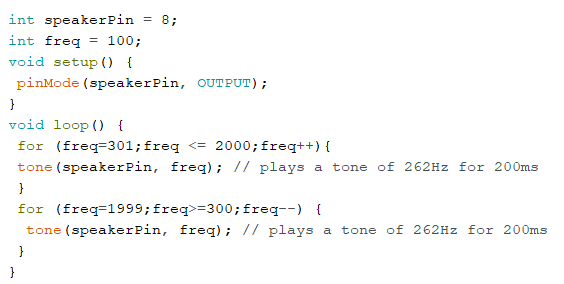
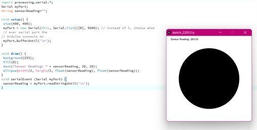

Portfolio HCI Marissa Hoekmeijer
Arduino workshop
In de workshops van Arduino ga ik aan de slag met het programma Arduino, waarbij ik code schrijf en dit upload naar het Arduino board. Met het Arduino bord wordt een circuit opgesteld, waarbij ik bijvoorbeeld een lampje kan laten branden of muziek kan laten afspelen. Bekijk mijn oefeningen hieronder.
Opdracht 3B
In deze opdracht was het de bedoeling dat ik meerdere lampjes in een circuit kon laten branden. Uiteindelijk moest ik wat spelen met de code, om ze te laten blinken in de zelfde tijd. Ik heb de code aangepast, door de twee lampjes onder elkaar te zetten, zodat ze tegelijk zonder delay aanspringen. Daarna met een korte delay gaan ze tegelijk uit en met een volgende delay ertussen gaat de loop weer opnieuw lopen.

Opdracht 4C
In deze opdracht ging ik verder met de twee lampjes opzet en moest ik een loop gebruiken om de lampjes te laten dimmen. Uiteindelijk was de opdracht om één lampje te laten dimmen, terwijl de ander juist feller wordt. Hier kwam een rekensommetje om de hoek kijken, je wilt namelijk dat beiden lampjes wel tegelijk werken. Uiteindelijk heb ik de brightness van het tweede lampje op 255 gezet en het – brightness gedaan, zodat elke keer wanneer hij loopt er 1 brightness waarde afgaat.
Opdracht 5
Met deze opdracht moest ik gaan kijken wat de waardes zijn die binnenkomen, wanneer een button gedraaid wordt. Dit was handig om te weten voor de volgende opdracht, dit zodat je ziet welke waardes deze knop kunnen bevatten.
Opdracht 6C
In deze opdracht ging ik verder met de rotatie button, waarbij ik het circuit van de twee lampjes weer gebruikte. Het was hierin de bedoeling dat door het draaien van de button de lampjes gingen dimmen of feller werden. We moesten gebruik maken van de Map functie van Arduino om ervoor te zorgen dat de range van de draaiknop gelijk staat met de range van de lampjes. Daarna was de opdracht dat het ene lampje moet dimmen terwijl de ander feller wordt, tegelijkertijd zonder dat je vertraging ziet tussen de twee. Dit is mij uiteindelijk gelukt doordat ik een extra variabelen aanmaakte. Zo spreek ik de variabelen die binnen komen apart aan en kan ik hierop ook een andere range voor de lamp aangeven. Zo kan ik zeggen dat het eerste lampje dan van 0 tot 255 moet gaan en het andere lampje juist van 255 tot 0. Zo gaat tegelijkertijd de een dimmen en de ander feller.
Opdracht 7A
In deze opdracht kreeg ik al een opgezette code, die ik kon gebruiken om een smiley face te projecteren op het licht display. Het gaf een goed inzicht hoe dit werkt en hoe je uiteindelijk zelf kan spelen met deze code om iets anders te laten zien. Als ik nu bijvoorbeeld de eerste rij van code aanpas kan ik niet 4 lampjes laten branden maar bijvoorbeeld alle 8. Want de eerste twee decimalen staan voor de rij en column en de volgende decimalen staat voor elk lampje. Als ik hier bijvoorbeeld B11111111, dan brand elk lampje op deze rij. Hier kan je dus erg leuk mee spelen.
Opdracht 8A
In deze opdracht ging ik aan de slag met een sensor dat gevoelig is voor licht. De sensor stuurt bepaalde waardes door naar de Arduino, waardoor je doormiddel van deze waardes ervoor kan zorgen dat je licht dimt of juist feller wordt. Eerst heb ik gekeken naar welke waardes er binnen kwamen door de serial monitor te openen. Hier kwamen de waarde 0 tm 37 binnen. Hierop heb ik de code aangepast, zodat de range klopt met de lampjes. Dit heb ik gedaan met de map functie, zo geef ik aan dat de range van 0 tot 37 gaat en dat dat moet passen tussen de 0 en 255 range van het lampje. Nu worden ze feller of dimmen ze als ik dichterbij kom.
Opdracht 9C
In deze oefening ging ik aan de slag met een speaker. Door te spelen met de hertz frequentie kon ik hem bijvoorbeeld vader jacob laten spelen (ja dat heb ik hem echt laten spelen!) Maar uiteindelijk was de opdracht om een sirene te maken en door wat aanpassingen in de code, ging de sirene inderdaad af. De aanpassing die dit heeft gedaan is door twee loops te maken, waarin de frequentie eerst omhoog loopt en wanneer deze een bepaalde waarde heeft bereikt, de waarde naar beneden af loopt. Ik vondt het zelf lastig om uit te vinden welke loop ik nodig had en heb het internet raadgepleegd, de volgende link heeft mij geholpen: Klik hier
Opdracht 11C
In deze opdracht ging ik aan de slag met een afstandssensor. Deze meet de afstand van een object tot zich en deze waardes kan je daarna ook weer gebruiken om bijvoorbeeld iets te laten branden. Uiteindelijk heb ik de code zo aangepast dat als ik dichterbij de sensor kwam het lichtje zal gaan blinken, ik kan namelijk de cm aanpassen. Als ik dit aanpas dan bepaal ik de afstand van het object.
Opdracht 12D
In deze opdracht ging ik aan de slag met Arduino in combinatie met Processing. Het programma wat ik al eerder voor school opdrachten heb gebruikt om leuke interacties te coderen. Ik heb hierbij de circuit opzet gebruikt van opdracht 8, waarbij de vorm in processing uiteindelijk veranderde doordat ik dichter of verderaf kwam van de sensor. Dit kwam tot stand omdat ik de sensorvalue aanpaste naar de inkomende waarde van de sensor. Daarbij gaf ik aan dat deze waardes moesten voldoen aan de waarde 0 tot en met 255. Zo krijg je bij de kleinste waarde een kleine cirkel en bij een grote waarde een grote cirkel. De cirkel in processing leest deze sensorvalue in Arduino uit, waardoor dit dus allemaal tot stand komt.
Opdracht 13B
In de vorige opdracht ging het om Arduino koppelen met Processing, maar in deze opdracht gaat het erom dat ik processing met Arduino koppel. Daarnaast moest ik een andere bron gaan gebruiken van de Arduino kant. Dus ik heb een andere sensor gebruikt. Ook moest ik iets anders laten verschijnen in processing. Uiteindelijk heb ik voor de draai sensor gekozen en twee setjes met lampjes. Dit circuit kwam uit opdracht 6. Ook heb ik de code van opdracht 6 verder uitgewerkt in deze opdracht. In processing heb ik van de vorm een driehoek gemaakt en deze van andere kleur laten veranderen. Uiteindelijk heb ik het voor elkaar gekregen om doordat ik met de muis over de driehoek ging, de lampen aan gingen, waarna ik met de draaiknop de helderheid kon aanpassen. De helderheid werd bestuurd door de map functie die ik al eerder had gebruikt. De driehoek uit processing werkte met een mouse over effect. Processing stuurde dan een code door naar Arduino als het waar was, dan sprak het namelijk poort “val H” aan, als het niet waar was sprak het poort “val L” aan. In Arduino is bij deze poorten de lampjes weergegeven, die branden via sensorvalue (in poort val h) of low zijn (in poort val L). Zo heb ik uiteindelijk ervoor kunnen zorgen dat de lampjes branden wanneer er interactie is in de schets van processing en de lampjes veller en minder vel werden, wanneer ik de draaisensor draaide.
Opdracht 14B
In deze opdracht ga ik aan de slag met een button. Het is de bedoeling dat ik met de, doordat ik de button indruk het lampje kan aanzetten. Dit lukte al vrij snel en dus werd mij gevraagd of ik ook met de button het lampje juist kan uitzetten in plaats van aan. Na wat spelen met de code is dit ook gelukt, dit is uiteindelijk gelukt door LOW en HIGH om te draaien.
Opdracht 15B
In deze opdracht ben ik aan de slag gegaan met de servomotor. Hierin kreeg ik al wat code toegeschoven, waardoor de motor zal gaan draaien, maar het was aan mij om uiteindelijk de motor op een leuke manier te laten dansen. Na wat spelen met de code heb ik wel iets grappigs neer kunnen zetten. Ik heb hierin vooral gespeeld met de loops en de positie variabelen van de motor, zodat hij op andere manieren ging bewegen.
Opdracht 16D
In deze laatste opdracht moet ik een eigen sensor gaan maken. Het was namelijk de bedoeling dat ik doordat ik deze sensor dan zal aanraken, het lampje zal gaan branden. Als eerst heb ik het uitgeprobeerd met aluminium folie, maar uiteindelijk ook met een aardbei. Ik heb de val waarde iets aangepast, zodat ik echt de aardbei moest aanraken, wilde het werken. De waarde was namelijk zo laag dat het van een afstand al ging branden.